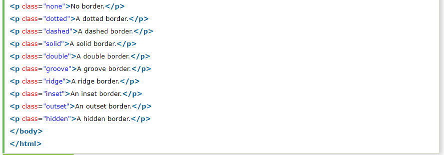

The CSS border is a shorthand property used to set the border on an element.
The CSS border properties are use to specify the style, color and size of the border of an element. The CSS border properties are given below
The Border style property is used to specify the border type which you want to display on the web page.
There are some border style values which are used with border-style property to define a border.
Output:
No border.
A hidden border.
The border-width property is used to set the border's width. It is set in pixels. You can also use the one of the three pre-defined values, thin, medium or thick to set the width of the border.
There are three methods to set the color of the border.
There is also a border color named "transparent". If the border color is not set it is inherited from the color property of the element.